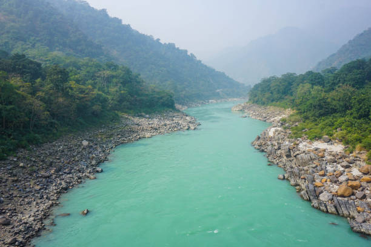
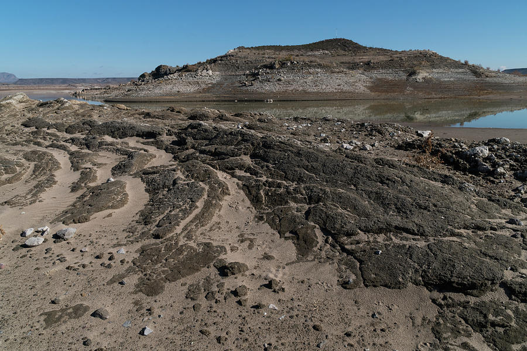
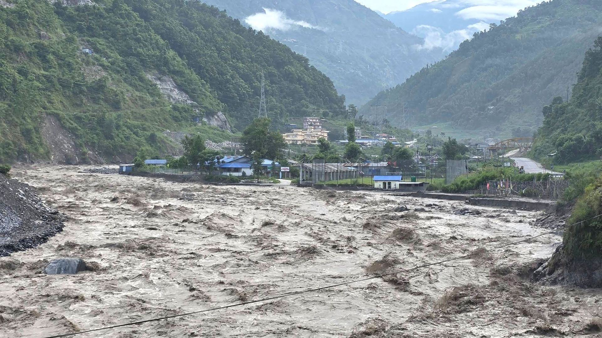
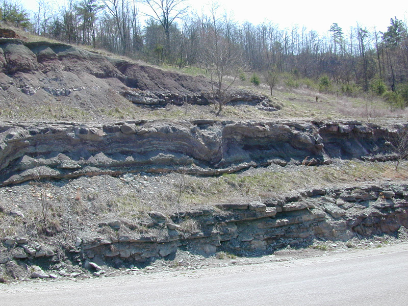
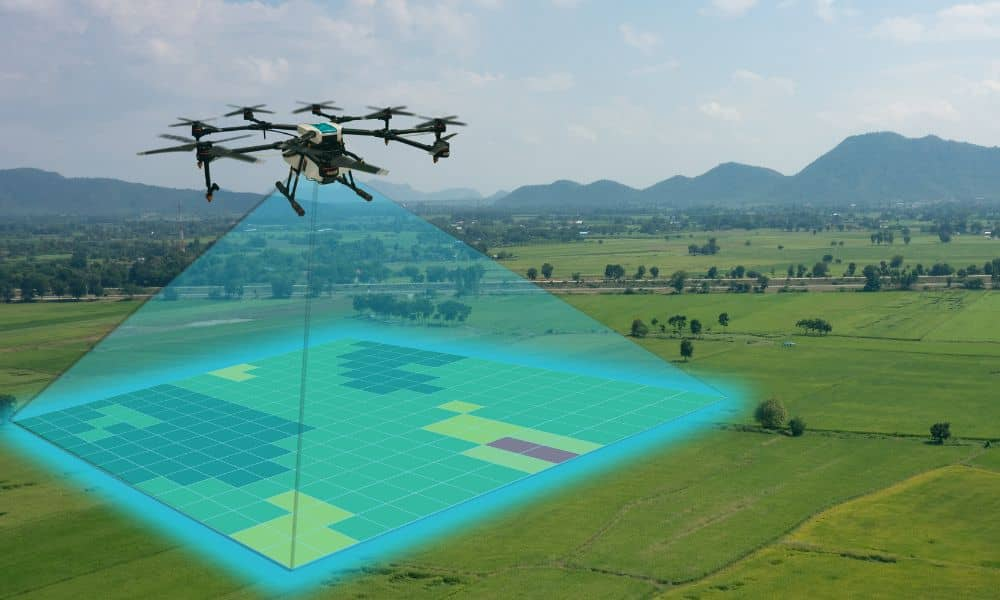
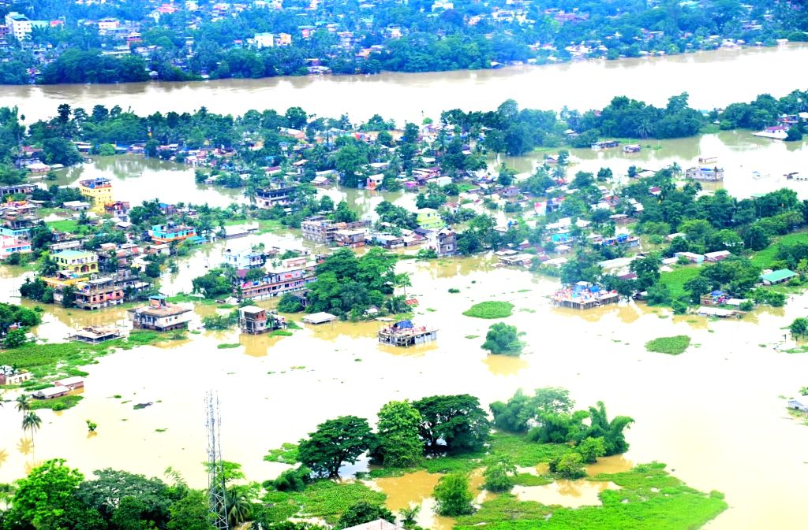
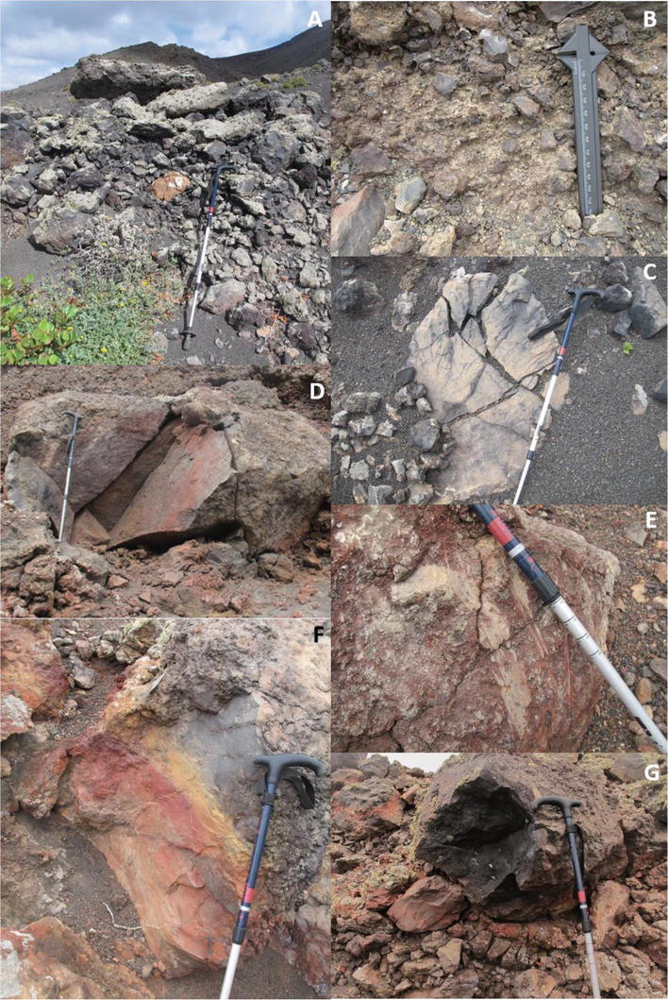
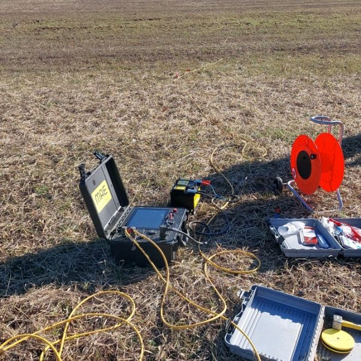

Indian Institute of Technology Kanpur
Department of Earth Sciences
Department of Earth Sciences
Pioneering field-based and satellite-driven research in river geomorphology, climate change, Earth surface processes, and hydrological modeling.
Terrain characterisation and landscape analysis using Earth Observation data, soil moisture and crop water stress estimation using drone-based thermal imaging, wetland hydrology, connectivity and dynamics.

River dynamics, geomorphic diversity, environmental flows, river health monitoring, floodplain lakes/wetlands restoration, and critical zone dynamics in river basins.

Late Quaternary stratigraphic development, channel avulsion mechanics, core archive sedimentology, and basin architecture in Himalayan and peninsular river systems.

Flood risk assessment and management, landslide susceptibility modeling, flash flood forecasting, and embankment breaching hazard analysis.

Paleoclimatic reconstruction from fluvial and lacustrine records; long-term sedimentation history in Himalayan foreland basin using deep drill cores.
Spatial data interpretation, geospatial modeling, satellite image processing, and terrain morphometry mapping.

High-resolution UAV imagery, LiDAR data acquisition, 3D elevation model generation, and thermal crop/soil imaging.

Simulating rainfall-runoff dynamics, 1D/2D hydraulic hydrodynamic modeling, and catchment water balance analysis.

Detailed grain-size profiling, mineralogical characterisation, OSL dating sample preparation, and core log analysis.

Electrical Resistivity Tomography (ERT), DGPS ground positioning, and shallow subsurface aquifer imaging.